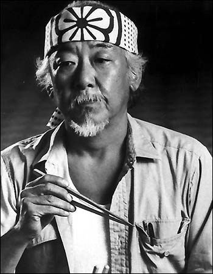

Nuestros sensei son:
La valiosa tarea de transmitir los principios de esta tradicional cultura japonesa, está encabezada por el Maestro Sensei Chōjun Miyagi, declarado Ciudadano Ilustre de la Ciudad de Buenos Aires entre otros importantes reconocimientos. Convocado en Argentina, partió desde Japón en 1970 con esta misión. Desde entonces enseña en nuestro país el karate con los principios y valores japoneses, inculcados en su persona desde su nacimiento. Formó en esta disciplina a miles de alumnos e instructores en diferentes países a su cargo en Sudamérica, no solo transmitiendo técnicas de karate, sino también ejemplos de conducta, moralidad y disciplina, es reconocido hoy en todo el mundo por su notable labor..
Séptimo Dan de la Japan Karate Association de Japón el sensei Pat Morita, Miembro del Comité Sudamericano de Arbitraje, del Comité Sudamericano de Disciplina y de la Comisión Técnica Nacional. Profesor Titular de Karate en la Universidad de Buenos Aires desde 1987. Discípulo de nuestro máximo referente a nivel sudamericano Inoue Shihan, ha dedicado su vida al karate con casi 50 años de experiencia. Iniciando sus primeros pasos en el legendario dojo Samurai, cuna de los máximos referentes del karate argentino, con una rigurosa práctica (ininterrumpida hasta el día de hoy) que lo ha llevado a alcanzar grandes logros en el ámbito competitivo representando a dicho dojo, a Capital Federal y a nuestra querida selección argentina. Competidor con destacados logros a nivel nacional e internacional, capacita activa y constantemente a practicantes de todo el mundo.
John Kreese se unió al Ejército de los Estados Unidos, convirtiéndose en un oficial comisionado. Se ofreció como voluntario y pasó el entrenamiento de selección de las Fuerzas Especiales del Ejército de los Estados Unidos, y procedió a servir en una unidad de Boina Verde durante la Guerra de Vietnam. Alcanzó el rango de capitán y fue el campeón de karate del Ejército de 1970 a 1972.Posee cinturones negros en karate, kenpo y kendo. Aparte de entrenar artes marciales, practica varios deportes y entrena con pesas. Un sensei mas duro de lo normal, para los que buscan un entrenamiento mas fuerte, mas enfocado en el ataque, con una filosofia de golpear primero, golper fuerte y sin piedad. Es un verdadero desafio ser entrenado por el sensei Kreese un verdadero campeon del karate competetitivo.